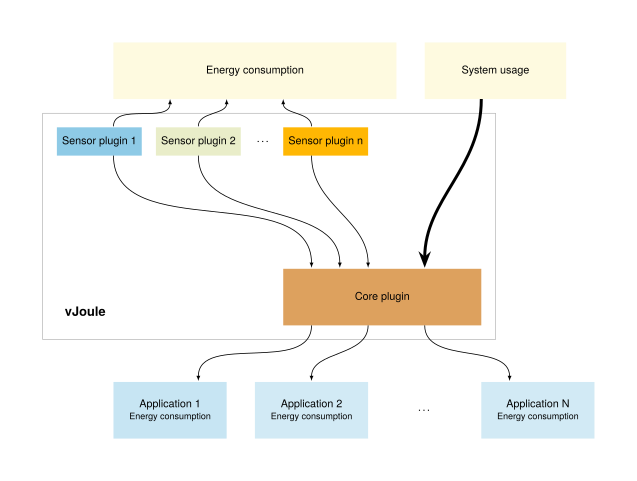
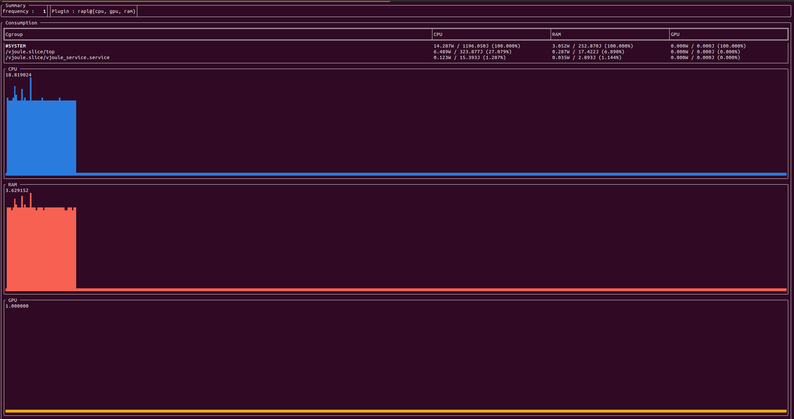

Welcome to vJoule's documentation
Nowadays, developers are more and more aware of the environmental cost of the software and infrastructures they build and deploy.
vJoule is a tool that allows you to measure the energy consumptions of running processes. Under the hood, vJoule will estimate the energy consumption of all monitored processes based on the current energy consumption measured on your computer.
You will find here all the informations you need to get started with vJoule.
vJoule is a tool developed at Davidson Consulting and inspired by other tools like PowerAPI.
| |
|  |
Getting started
This section will help you get started with vJoule.
You'll learn how vJoules works, how to install it and how to test it.
What is vJoule?
vJoule is a tool that can be used to estimate the energy consumption of a set of running processes. Technically, vJoule is built on a plugin system with two different kind of plugins :
core, this kind of plugin will define the behavior of vJoule and perform the information gathering from sensor plugins and the effective result computation. In this vJoule version two core plugins are implemented :dividersplits the consumption acquired by sensor plugins, and divides them between the running processes based on their relative system usage (%CPU, %GPU, etc.).dumperretreives the consumption acquired by sensor plugins, and system usage of running processes and dump those metrics in csv files for cold analysis.
sensor, this kind of plugin are used to retreive system information usefull for the core plugin. There are different kind of sensor plugin, in this vJoule version three plugin types are implemented :cpuplugin that retreives the energy consumption of the CPU of the system, (rapl)ramplugin that retreives the energy consumption of the RAM of the system (rapl)gpuplugin that retreives the energy consumption of the GPUs of the system (rapl,nvidia)
To monitor your processes consumption the divider core plugin will come in handy. This documentation will mainly focus on this core plugin.
You currently have two ways to interact with vJoule :
- As a command line interface : useful for easy and quick usage
- As a linux service : useful if you want to interact with vJoule in a program, and monitor more complex applications.
Current limitations
vJoule cannot be used inside a virtual machine as it needs direct access to the hardware.
Installation
From deb package (recommended)
vJoule can be installed from deb files found in the Github
releases. The vjoule-tools_<VERSION>.deb package will install a
systemd service: vjoule_service and a client program simply named
vjoule.
You can install the .deb file (once downloaded) by running dpkg -i vjoule-tools_<VERSION>.deb.
From sources
vJoules uses CMake as a build tool.
You will need to have installed cmake, g++, git and nvidia-ml.
git clone https://github.com/davidson-consulting/vjoule.git
cd vjoule
mkdir .build
cd .build
cmake ..
make -j8
sudo make install
First tests
Now that vJoule is installed on your computer, let's try it. Remember that vJoule is available through two interfaces:
- A command line interface, useful for simple and quick usage
- A linux service, useful if you need to embed vJoule in a program
This section presents just a basic test to make sure vjoule is properly installed. A more thorough tutorial is presented in the section Divider core.
vJoule, through the command line interface (CLI)
vJoule CLI is conveniently called vjoule. You can use it to estimate the energy consumption of a given command, like this:
$ # Here, ls is not a subcommand of vjoule
$ # We mesure the energy consummed by the ls command execution
$ vjoule ls
# Output
|CGroup | CPU| GPU| RAM|
|--------|------------|------------|------------|
|Global | 1.11554J| 0.22155J| 0.2025J|
|Process | 0.21457J| 0J| 0.048371J|
You can also use vjoule on a command that needs parameters. In this case, we will estimate the energy consumption of the stress command.
$ vjoule stress --cpu 2 --timeout 2s
# Output
|CGroup | CPU| GPU| RAM|
|--------|------------|------------|------------|
|Global | 85.4813J| 10.2509J| 10.4242J|
|Process | 84.8442J| 0J| 0.820489J|
Of course, you can use vjoule while executing, let's say, a python script.
$ vjoule python myscript.py
# Output
|CGroup | CPU| GPU| RAM|
|--------|------------|------------|------------|
|Global | 1.16052J| 0.312761J| 0.257263J|
|Process | 0.957794J| 0J| 0.190821J|
vJoule, through the service
As the CLI can be a bit limited for embedding vJoule in a program, vJoule is available through a linux systemd service.
$ sudo systemctl start vjoule_service
You can verify that the service is up either by checking with systemctl:
$ sudo systemctl status vjoule_service
Or by checking for the log file :
$ cat /etc/vjoule/service.log
By default, vJoule is configured for monitoring the energy consumption of its service. To see how much energy it uses, have a look in the directory /etc/vjoule/results/vjoule.slice/vjoule_service.service. You'll see several files where are stored the current energy consummed by vjoule on different components of your computer. By printing the content of the cpu file, you will see the energy consummed by the CPU to run the service. Other files may be empty because your hardware do not expose those informations.
Check out the tutorial section of this book to learn how to use vJoule to monitor the energy consumption of your own processes.
User Guide
In this section, you will learn more about the concepts and technical details about vJoule. In particular :
- vJoule uses cgroup to know which process to monitor. But what are cgroups ?
- Where are the main configuration files of vJoule? Where to find the different energy consumption estimations ?
- How can I fetch results from within a program ?
Cgroups
vJoule monitor the energy consumption of processes through their cgroup. In a nutshell, a cgroup is a set of linux processes. Cgroups can be used to limit the resources usage of a set of running processes. With vJoule, you can estimate the energy consumption of a set of processes by putting them in a cgroup and asking vJoule to monitor it.
For instance, all processes related to vJoule (the vjoule service for
instance) are by default attached to the vjoule.slice cgroup.
If you want to monitor the energy consumption of a given process, you
will need to attach this process to a cgroup (you've created) and
configure vJoule to monitor this cgroup. To configure the cgroups
watched by vJoule, the configuration file is stored in
/etc/vjoule/cgroups is used. All cgroups watched by vJoule have to
be placed inside slices (cgroup containing cgroups).
In this section we will assume that the configuration of the vJoule
service in /etc/vjoule/config.toml was unchanged since installation,
and that the service is started.
sudo systemctl start vjoule_service.service
For instance, let's say you want to measure the energy consumption of the API you've built, there are two steps to perform :
- Configuring vJoule
- Launching the application
Configuring vJoule
First we need to inform vJoule that their are cgroups we want to
measure. We will create them later, however the order of attachement
and creation has no importance for vJoule as it will effectively
monitor the cgroups after they are created. In the file
/etc/vjoule/cgroups add the following line :
measurements.slice/*
This line will configure vJoule to monitor all cgroups in the slice
measurements.slice. Bash simple regular expression can be used to be
more specific, for example measurements.slice/api* will monitor all
the cgroups in the measurements.slice that starts with api and
ignore all the others.
There is no need to restart the vjoule service after modifying the cgroup file, it will reconfigure itself automatically.
Launching the applications
Now that vJoule is configured to watch the cgroups of our slice, we
can create them and attach processes to them to be seen by vJoule. To
facilitate the management of cgroups in this section we will use the
commands provided by the packet cgroup-tools.
$ # Create a slice that will contain our cgroups
$ sudo cgcreate -g cpu:measurements.slice
$ # Create a cgroup "api" in a "measurements" slice (a group of cgroup)
$ sudo cgcreate -g cpu:measurements.slice/api
$ # The "measurements" slice could contain other components of your application
$ # Like the database for instance
$ # To do so :
$ sudo cgcreate -g cpu:measurements.slice/database
$ # Run a command that will be attached to the api cgroup
$ sudo cgexec -g cpu:measurements.slice/api mycommand
$ # OR
$ # Attach an existing process, by its pid, to the api cgroup
$ sudo cgclassify -g cpu:measurements.slice/api mypid
$ # TIP : For a process with multiple PIDs, you can use pidof like:
$ sudo cgclassify -g cpu:measurements.slice/api `pidof apache2`
Should you use cgexec or cgclassify? It depends on your context. If you want to monitor a running process like a webserver, use cgclassify with the webserver's pid. If you want to run a command and see how much energy it consummed during its execution, use cgexec.
You don't want to use those linux commands directly ? There is chances you can find librairies to manage cgroups in your favorite programming language.
Files of interest
Once vJoule is installed, you should find a directory located in
/etc/vjoule that contains configurations, logs and results. For
example, the service configuration is located in
/etc/vjoule/config.toml.
Configuration files and logs
/etc/vjoule/config.toml: the configuration file of thevjoule_service. It can be modified to change the log level and some other options that depends on the core plugin used./etc/vjoule/service.log: the log file of thevjoule_service,
Energy estimation results
Assuming you are using the divider core plugin (specified in the
configuration file of the vjoule_service), the directory
/etc/vjoule/results/MYSLICE/MYCGROUP contains the energy consumption
estimation of the cgroup MYSLICE/MYCGROUP. This is where you will
find the informations you're looking for.
By default, vJoule is configured to monitor its own service in a
cgroup named vjoule.slice. The energy consumption of the sensor will
then be stored in self-updating files located in
/etc/vjoule/results/vjoule.slice/vjoule_service.service.
vJoule will give you up to five results files:
- ram - The energy consumption of the RAM
- cpu - The energy consumption of the CPU
- gpu - The energy consumption of the GPUs (sum if there are multiple gpus)
The value stored in the file correspond to the energy consumption, in joule, since vJoule have started monitoring these processes.
The divider core plugin also dumps the energy consumption of the
whole system at the root of the result directory
/etc/vjoule/results. There can be found the three files cpu,
ram and gpu that contains the energy consumption in joule of
the whole system since the start of the vJoule service (as acquired by
the sensor plugins).
The divider core
The divider core is the core plugin used by default by the vJoule
service. It divides the consumptions of the watched cgroups using
their consumption. It can monitor three different kind of sensor
plugins cpu, gpu and ram.
A result directory is created for every watched cgroup. Each of them
will contain three files cpu, ram and gpu containing the
consumption of the cgroup in joule since its creation (i.e. since the
moment vjoule started monitoring them).
Basic tutorial
Usage
A default configuration and explanation of the divider plugin can be
acquired by running the command vjoule_service --ph divider.
Default configuration
Here an example of configuration that can be used by the divider core :
[sensor]
freq = 1 # frequency of update in hertz (the higher the faster)
log-lvl = "info" # debug < success < info < warn < error < none
log-path = "/etc/vjoule/service.log" # log file (empty means stdout)
# the name of the core plugin to use for the sensor
core = "divider"
# the directory in which result will be written
output-dir = "/etc/vjoule/results"
# delete cgroup result directories when the cgroup no longer exists
delete-res = true
# if true mount the result directory in tmpfs (less i/o generated by vjoule)
mount-tmpfs = true
# following configuration is optional
# It activates some part of the divider
[cpu] # configuration to enable CPU energy reading
name = "rapl" # rapl plugin for compatible intel or amd cpus
[ram] # configuration to enable RAM energy reading
name = "rapl" # rapl plugin for compatible intel or amd cpus
[gpu:0] # configuration to enable GPU energy reading
name = "nvidia" # nvidia plugin for nvidia GPUs
# A machine can have different GPU from different constructors
# For example a integrated GPU, and an nvidia GPU card
[gpu:1] # configuration to enable GPU energy
name = "rapl" # rapl plugin form compatible intel of amd cpus
The flag delete-res can sometime comes in handy when monitoring
cgroups that are appearing and disappearing during the lifetime of an
experiment. It will forbid the service to remove the result
directories when the cgroup disappear. By default result directories
are deleted when cgroups disappear to avoid using two much memory or
disk space.
On the other hand the flag mount-tmpfs will make the divider
plugin mount the result directory in tmpfs, to avoid making I/O access
when writting the result.
Cgroups file
The divider core plugin uses another configuration file, in
/etc/vjoule/cgroups, to filter the cgroups that are watched by the
sensor, and ignore unwanted cgroups. This configuration file is a
list of rules, every rules must start with a slice (a cgroup that
contains other cgroups). For example my.slice/*., will make the
sensor watch all the cgroups in the slice my.slice, and
system.slice/docker* will watch all the cgroups in system.slice
that starts with docker. Basically, it lists all the cgroups that
would be found if the command ls my_rule was run in the cgroup mount
directory. The following presents an example of configuration for
cgroup listing that has to be placed in /etc/vjoule/cgroups.
vjoule.slice/*
system.slice/docker*
my_custom.slice/my_custom_cgroup
The dumper core
The dumper is a core plugin that can be used to dump the metrics of
the system, and the different plugin sensors. It can monitor three
different kind of sensor plugins cpu, gpu and ram, and be
attached to different perf events for the cgroups that are determined
by the configuration file.
Unlike the divider plugin, the dumper does not write the result in
different directories for each cgroup, but write only two files :
- /etc/vjoule/results/cgroups.csv - this file contains the perf events watched by the plugin, for each of the watched cgroups
- /etc/vjoule/results/energy.csv - this file contains the energy consumptions returned by the different connected plugins
Usage
As any plugin, a default configuration and explanation of the dumper
plugin can be acquired by running the command vjoule_service --ph dumper.
Default configuration
Here is an explanation of configuration that can be used by the dumper plugin :
[sensor]
freq = 1 # frequency of update in hertz (the higher the faster)
log-lvl = "info" # debug < success < info < warn < error < none
log-path = "/etc/vjoule/log" # log file (empty means stdout)
core = "dumper" # the name of the core plugin to use for the sensor
# the directory in which result will be written
output-dir = "/etc/vjoule/results"
# delete cgroup result directories when the cgroup no longer exists
delete-res = true
# if true mount the result directory in tmpfs (less i/o generated by vjoule)
mount-tmpfs = true
perf-counters = ["LLC_MISSES", "PERF_COUNT_HW_CPU_CYCLES"] # The list of performances counters to monitor
# following configuration is optional
# It activates some part of the dumper
[cpu] # configuration to enable CPU energy reading
name = "rapl" # rapl plugin for compatible intel or amd cpus
[ram] # configuration to enable RAM energy reading
name = "rapl" # rapl plugin for compatible intel or amd cpus
[gpu:0] # configuration to enable GPU energy reading
name = "nvidia" # nvidia plugin for nvidia GPUs
# A machine can have different GPU from different constructors
# For example a integrated GPU, and an nvidia GPU card
[gpu:1] # configuration to enable GPU energy
name = "rapl" # rapl plugin form compatible intel of amd cpus
One can note the value perf-counters which is specific to the
dumper plugin and did not appear on the divider core. This value
defines the list of perf events to watched for each cgroups monitored
by vJoule, and defines the values that will be dumped inside the
cgroups.csv file.
Cgroups file
The dumper core plugin uses another configuration file, in
/etc/vjoule/cgroups, to filter the cgroups that are watched by the
sensor, and ignore unwanted cgroups. This configuration file is a
list of rules, every rules must start with a slice (a cgroup that
contains other cgroups). For example my.slice/*., will make the
sensor watch all the cgroups in the slice my.slice, and
system.slice/docker* will watch all the cgroups in system.slice
that starts with docker. Basically, it lists all the cgroups that
would be found if the command ls my_rule was run in the cgroup mount
directory. The following presents an example of configuration for
cgroup listing that has to be placed in /etc/vjoule/cgroups.
vjoule.slice/*
system.slice/docker*
my_custom.slice/my_custom_cgroup
Sensor plugins
Sensor plugins are plugins used to retreive the energy consumption of
the hardware. They are different type of sensor plugins as there are
different kind of hardware on which we can retreive energy
consumption. In this version of vJoule, there are cpu, ram and
gpu plugins implemented.
Information about the plugins can be retreived by running the command :
# vjoule_service --ph plugin_name
# for example
$ vjoule_service --ph rapl
Rapl plugin
The rapl plugin retreive the energy consumption of three kind of
hardware, cpu, ram and gpu where here the gpu is the integrated
gpu chip. RAPL is usable on intel cores only.
Depending on the machine, gpu and ram may be unavailable, in that case during the configuration warnings will be displayed, and ram and gpu energy consumption retreiving will always return 0.
Warning, there is no perf events on integrated GPU, meaning that the
gpu consumption will be acquired for the whole system but will not be
divided between cgroups when using the divider core plugin.
Nvidia plugin
The nvidia plugin retreives the consumption of nvidia graphics card
using nvml. It can be only be used for the component gpu. This
plugin takes only one element of configuration cgroup-consumption.
[gpu]
name = "nvidia"
cgroup-consumption = true
If cgroup-consumption is true, then the plugin will retreive the
name of the cgroups using the device, and their percentage of usage.
Depending on the graphics card, cgroup usage can be available or
not. Warning messages are displayed if it is not available. The
plugin is capable of managing multiple devices, if multiple graphics
card are found on the machine.
Combining plugins
When there are a nvidia GPU, there can still be an integrated intel GPU. In that case multiple GPUs consumption are retreivable. To define that in the configuration file, the following can be written.
[gpu:0]
name = "rapl"
[gpu:1]
name = "nvidia"
Both divider and dumper cores are able to manage multiple gpu
plugins, but only one cpu and one ram plugin can be used at the
same time.
Pullers
We have implemented several example of pullers program that fetch
the results. The idea of the pullers directory in the github
repository is to provide basic examples of how to retreive the results
of vjoule service from a program.
There are four examples in the repository :
- a bash example, that simply prints the cpu consumption of the System and of the vjoule service.
- a c++ example, that prints the consumption of the different components (cpu, ram and gpu) of the system and all the cgroup watched by the service.
- a rust example, that prints the consumption of the different components (cpu, ram and gpu) of the system and all the cgroup watched by the service.
- a python example, that retreives the consumption of the different components (cpu, ram and gpu) of the system and all the cgroup watched by the service and plot them to a image file when Ctrl-C is pressed.
vjoule CLI
This section details how to use the three commands in the vjoule command line interface:
- vjoule exec - used to estimate the energy consumption of a given command
- vjoule profile - used to create a profile of the energy consumption of your computer
- vjoule top - used to visualize the energy consumption of your computer and the cgroups monitored by vjoule service
vjoule exec
The vjoule exec command can be used to estimate the energy consumption of a given command.
You can use it as follows:
$ vjoule exec python myscript.py
# Output
|CGroup | CPU| GPU| RAM|
|--------|------------|------------|------------|
|Global | 1.16052J| 0.312761J| 0.257263J|
|Process | 0.957794J| 0J| 0.190821J|
Note: this is the default command in vJoule CLI, you can omit the exec subcommand and just use vJoule, as follows:
$ vjoule python myscript.py
# Output
|CGroup | CPU| GPU| RAM|
|--------|------------|------------|------------|
|Global | 1.16052J| 0.312761J| 0.257263J|
|Process | 0.957794J| 0J| 0.190821J|
If you prefer to store the result output in a csv file, you can use the -o flag, as follows:
$ vjoule -o output.csv python myscript.py
# Output
$ cat output.csv
CGroup ; CPU; GPU; RAM
Global ; 1.16052J; 0.312761J; 0.257263J;
Process ; 0.957794J; 0J; 0.190821J;
vJoule CLI will create a result directory every time it is run. Every result directories are stored under the __vjoule directory. The __vjoule/latest directory is a symbolic link to the latest run.
vjoule profile
vjoule profile is a command that run a series of stress on your system and output a model of the energy consumption of your computer depending on its cpu load.
For example, running vjoule profile may output a result like this:
$ ./vjoule profile
91% [||||||||||||||||||||||||||||||||||||||||||||||||||||||| ]
Nb cores | CPU | RAM |
- | - | - |
0 | 34.66421 | 5.13352 |
1 | 42.96116 | 5.13747 |
2 | 50.93322 | 5.14628 |
3 | 59.46340 | 5.16990 |
4 | 67.55849 | 5.17482 |
5 | 75.57416 | 5.17621 |
6 | 77.31018 | 5.17343 |
7 | 79.34835 | 5.17292 |
8 | 81.33730 | 5.17994 |
9 | 83.20559 | 5.18949 |
10 | 84.86211 | 5.18985 |
11 | 86.52374 | 5.17757 |
This could be then visualized in a third-party program:

Results are presented in watts and correspond to the power used by your computer while stressing a given number of cores. This subcommand can be useful to understand how the energy used by your computer increase as it uses more and more cores.
vjoule top
vjoule top is a command that will start a terminal-based visualization of the current energy consumption of your computer and cgroups monitored by the vjoule service.
This can just be started using vjoule top

The top part present the energy consumption of the whole system and all monitored cgroups. The bottom part present the evolution of the energy consumption of the whole system. Values indicated under CPU/GPU/RAM are the maximum recorded value in watts, to have an idea of the scale of the graph.
Tutorial
This section aims to provide practical tutorials to learn to use vJoule for your experiments.
Measuring the energy consumption of your program
In this tutorial, we will learn to use vJoule to measure the energy consumption of a simple python script. Please make sure that vJoule is already installed on your computer.
Your program to evaluate
Let's say you want to measure the energy consumption of the following python script.
import sys
# Compute the value of Pi.
# A higher value of prec will lead to a higher precision.
def computePi(prec):
res = 0
for i in range(prec):
res += (4.0 / prec) / (1.0 + ((i - 0.5) * (1.0 / prec)) * ((i - 0.5) * (1.0 / prec)))
return res
if __name__ == "__main__":
if len(sys.argv) < 2:
print("Usage: python compute_pi.py precision")
else:
print(computePi(int(sys.argv[1])))
Using vJoule CLI
Using vJoule CLI is pretty straightforward, just run python with vJoule:
$ vjoule python compute_pi.py 1000
Using vJoule linux service
vJoule linux service offers a more flexible solution.
Making sure that vJoule services are up
We will first make sure everything is running with the following commands:
$ sudo systemctl status vjoule_service
If vjoule service is not running, start it with:
$ sudo systemctl start vjoule_service
Creating a cgroup for our process
Remember that vJoule uses cgroups to know which processes to monitor. For a quick introduction to cgroups, refer to the dedicated section in the user guide.
vJoule needs at least a two level cgroup hierarchy. We can organize it as follows:
- A cgroup named
measurements.slicefor our test, - Inside
measurements.slice, a cgroup namedcompute_piin which we will attach our python script.
This can be done with cgcreate:
$ sudo cgcreate -g cpu:measurements.slice/compute_pi
We will configure vJoule to monitor the energy consumption of each cgroups present in measurements.slice. To do so, we will edit our service's list of monitored cgroups (present in /etc/vjoule/cgroups) by adding measurements.slice to the list of cgroups.
vJoule will now reload itself and create a result directory for our cgroups, in /etc/vjoule/results/measurements.slice. Inside, you should have a compute_pi directory with a file for every monitored component (CPU, GPU, RAM).
Now, we can run our python script inside our compute_pi cgroup. This can be done with cgexec:
$ sudo cgexec -g cpu:measurements.slice/compute_pi python compute_pi.py
Getting the results
You should now have a non-zero value in results files. If some are empty, that's because your you did not activated a component or that it was not available.
The value present in the results files are expressed in Joules. It correspond to the amount of energy consumed since vJoule started to monitor the related cgroup.
Trouble-shooting
A. vJoule does not seem to start...
The log file /etc/vjoule/service.log is very useful to determine the reason of the error.
Here are some common errors with some explanations :
-
[Error][DIVIDER] Cgroup v2 not mounted, only cgroup v2 is supported.In this version of vJoule only cgroup v2 are supported. Maybe you have cgroup v1 installed on your system. https://rootlesscontaine.rs/getting-started/common/cgroup2/.
The same error can appear on different component, dumper core and nvidia sensor plugins need cgroup v2 to work.
-
[Error][RAPL] RaplReader : failed to configure.Rapl is not available on your machine. For the moment this is the only sensor plugin that can read CPU consumption. You can still disable it if your not interested in the CPU consumption, but only on the consumption of nvidia GPU. cf. Sensor plugins
-
[Error][NVIDIA] NVML is not available.If you don't have an nvidia graphic card, the explanation is easy the plugin won't work. You will have to deactivate it in the configuration file. cf. Sensor plugins.
However, if you have a nvidia GPU make sure you have installed the Nvidia management library and that it matches the version of the nvidia drivers (sometimes it does not because.. nvidia). A quick test can be to run the command
nvidia-smi. Nvidia NVML.
B. vJoule is running but I don't have any consumption for my processes ?
Here are some common tracks for explanation :
-
First you can check the result files of the whole system (
/etc/vjoule/results/cpufor example). If they increment the sensor plugin and divider core are effectively running and working. Or run the commandvjoule topto verify that vjoule is running and working properly. -
The service runs at a given speed specified in the configuration file by the
freqparameter. This specifies the number of iteration of the service per seconds (default being 1). This is an important information, if your application took less that a second to be executed, maybe the service just didn't have enough time to see it. To make sure your application will be seen by the service here a simple procedure to follow.-
Configure vJoule service to monitor your cgroups, and create them (cf. Cgroups).
-
Watch the file
/etc/vjoule/results/cpuusing iowatch, or inotify and wait for a modification. Here you can check wether the directory corresponding to your cgroups are correctly created. -
Start your application and wait its end, or an event you have defined for your usecase.
-
Watch the file
/etc/vjoule/results/cpuusing iowatch or inotify to make sure the service has finished its iteration. -
Read the result in the corresponding directory of your cgroups.
-
Delete your cgroups, and remove them from the vjoule service configuration.
Step 2 to 5 can be repeated multiple times, if you want to run multiple execution using the same cgroups.
-
-
If the cgroups you are watching appears and disappear during the execution (for example docker containers). Maybe the divider core plugin has simply deleted the result file when the cgroup disappeared. You can remove that behavior by modifying the flag
delete-resin the configuration file of the service (cf. Divider core).